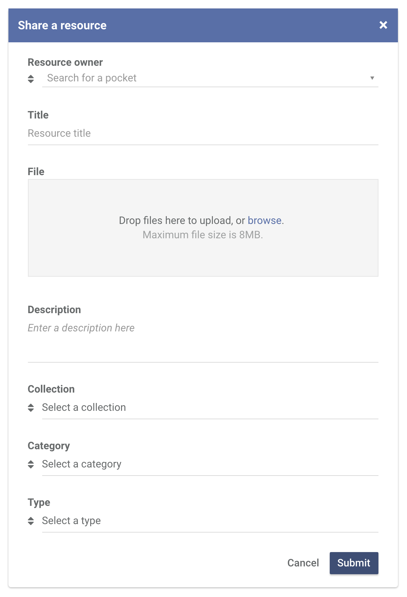
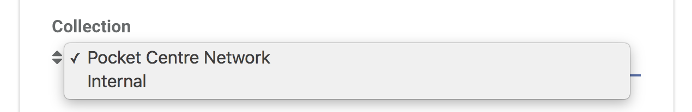

To share a resource, head over to the Resources page. Click the Share a resource button at the top right corner of the page.
Fill out all the required information in the Share a resource modal and click Submit.
If you want your resource to be seen by the entire Pocket Centre Network, select Pocket Centre Network in the Collection. Otherwise, select Internal if it's only for your pocket.
Important: When a resource is submitted to be visible to the entire Pocket Centre network, it goes through an approval process. Your resource will initially be Unapproved and will only be visible to people in your pocket. Once your resource is approved, your resource becomes visible to everyone in the Pocket Centre network.